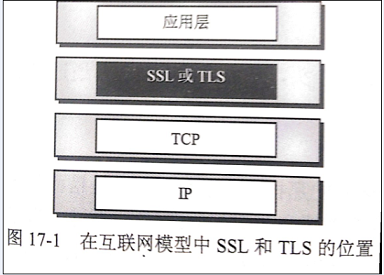
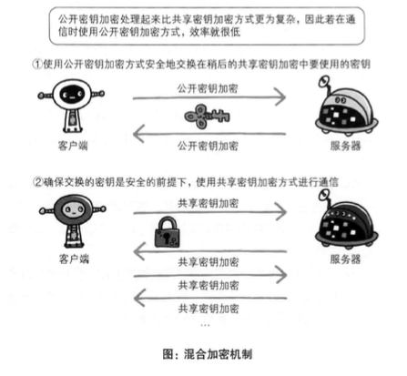
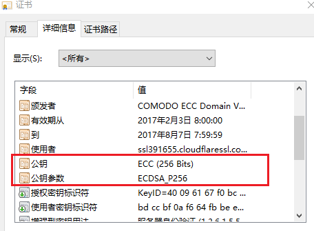

HTTPS
默认HTTP的端口号为80，HTTPS的端口号为443。
HTTPS其实是有两部分组成：HTTP + SSL / TLS，也就是在HTTP上又加了一层处理加密信息的模块。 服务端和客户端的信息传输都会通过TLS进行加密，所以传输的数据都是加密后的数据。

SSL加密
- SSL是Netscape公司所提出的安全保密协议，在浏览器（如Internet Explorer、Netscape Navigator）和Web服务器（如Netscape的Netscape Enterprise Server、ColdFusion Server等等）之间构造安全通道来进行数据传输
- SSL运行在TCP/IP层之上、应用层之下，为应用程序提供加密数据通道
- 采用了RC4、MD5以及RSA等加密算法，使用40 位的密钥，适用于商业信息的加密。
- Netscape公司相应开发了HTTPS协议并内置于其浏览器中，HTTPS实际上就是SSL over HTTP，它使用默认端口443，而不是像HTTP那样使用端口80来和TCP/IP进行通信。
- HTTPS协议使用SSL在发送方把原始数据进行加密，然后在接受方进行解密，加密和解密需要发送方和接受方通过交换共知的密钥来实现，因此，所传送的数据不容易被网络黑客截获和解密。
加密技术
公开密钥加密(public-key cryptography)->加密算法是公开的,而密钥是保密的.加密和解密都会用到密钥（使用一对非对称的密钥，一把私钥一把公钥）。
共享密钥加密(common key crypto system)->也被叫做对称密钥加密。以共享密钥方式加密时必须将密钥也发给对方。
https采用共享密钥加密和公开密钥加密两者并用的混合加密机制

数字证书
证书的一个作用是用来证明作为通信乙方的服务器是否规范,另外一个作用就是确认对方服务器背后运营的企业是否真实存在.拥有该特性的证书就是EV SSL证书(extended validation SSL certificate)
